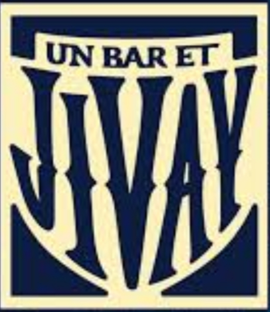

Un Bar et Jivay
Bar convivial & bières artisanales
Un spot chaleureux où l’on se retrouve pour partager un verre dans une ambiance détendue.
Les lieux et organisations qui accompagnent Atlantis tout au long de l’année.
Bar convivial & bières artisanales
Un spot chaleureux où l’on se retrouve pour partager un verre dans une ambiance détendue.
Terrasse vivante & cuisine italienne
Adresse incontournable du centre-ville, parfaite pour se poser, discuter et se renconctrer.
Temple du burger
Burgers généreux et ambiance street-food.
–10% pour les étudiants MBS
Pizzeria emblématique de la Comédie
Des pizzas conviviales au cœur de Montpellier.
Menu étudiants spécial MBS
Bar festif
Atlantis peut y organiser ses événements/before avec after gratuit au Fizz et tarifs préférentiels.
Lieu phare des apéros montpelliérains
Partenaire idéal pour accueillir nos événements dans une ambiance festive et chaleureuse.
Menu étudiant + Tarifs spéciaux MBS
Brasserie conviviale
Un lieu chaleureux où les membres de MBS peuvent se retrouver pour échanger.
Menu étudiant + Tarifs spéciaux MBS
Gourmandises & douceurs artisanales
Chocolats, pâtes à tartiner et cadeaux gourmands.
–10% pour les étudiants MBS
Paiements & organisation
Facilite la gestion de nos billetteries, inscriptions et paiements.
10€ de cashback tous les 4 paiements de 5€
Votre banque en ligne
Une banque avec des avantages pour tous.
10€ offerts à la création de votre compte avec notre code
Lieu d’événements d’envergure
Un cadre spacieux pour accueillir des événements Atlantis.
Tarifs préférentiels
Un moyen de transport unique
Plus besoin d'Uber, réservez votre SAM.
Tarifs préférentiels
Des soirées spéciales
Un espace exceptionnel pour les événements premium et les temps forts d’Atlantis.
Brasserie emblématique de Jean-Jaurès
Cadre élégant et convivial, parfait pour nos afterworks.
Privatisation d'espaces
Un club mythique
Ambiance immersive…
Privatisation d'espaces – Tarifs préférentiels